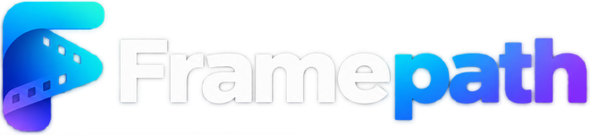

Video & creative work
Video, editing, and stories worth watching.
From video and websites to useful tools and 3D-printed objects. We find the right form for your idea.
Explore our work ↓
A local-first media asset management platform for ingesting, previewing, indexing, and finding footage on your own hardware.
Under active development. Advanced AI search and managed services are on the roadmap.
Explore Framepath ↗Framepath · A look inside the local media library ↗
On screen, online, or in your hands. The idea comes first. We find the right way to make it.
Video, editing, and stories worth watching.
Purposeful websites. Small tools that solve real problems.
Prototypes, custom parts, and ideas you can hold.
A fresh approach to the thing that’s been getting in your way.
Independent. Hands-on. Open to the unexpected.
Oddform brings a creative eye and a practical mindset to video, digital projects, and physical making.
A video, a website, a custom print, or an idea you’re still figuring out. Tell us what you have in mind. A few sentences is a good start.